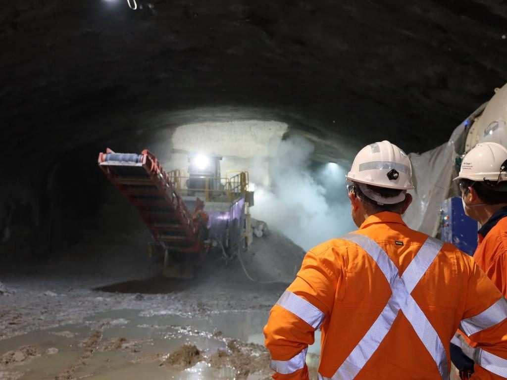
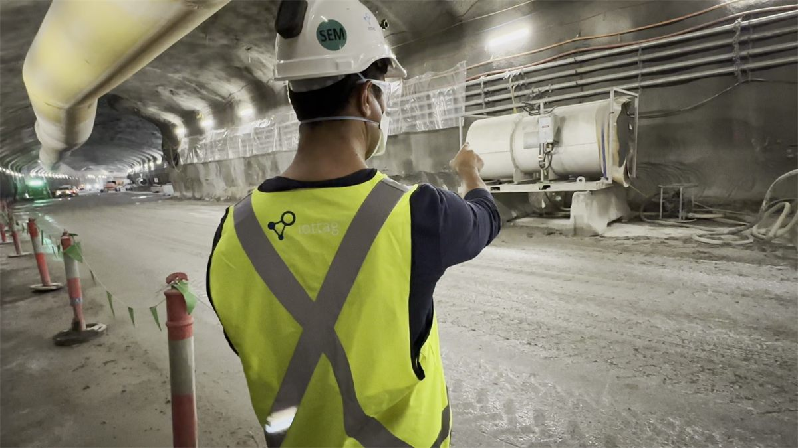
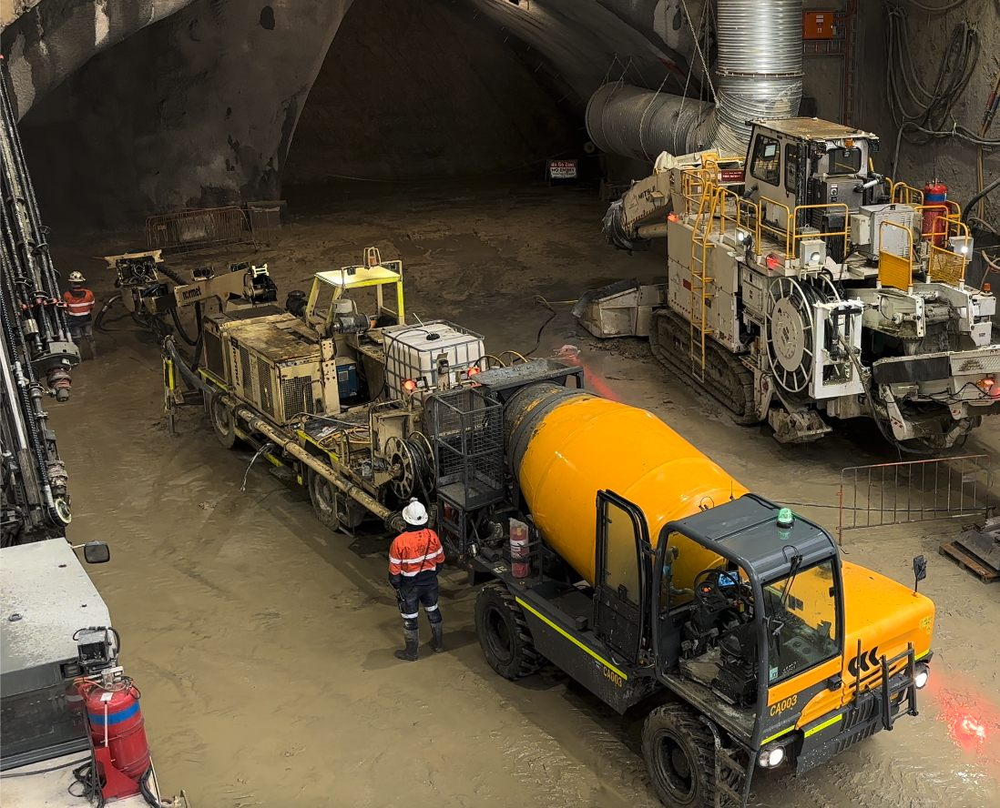
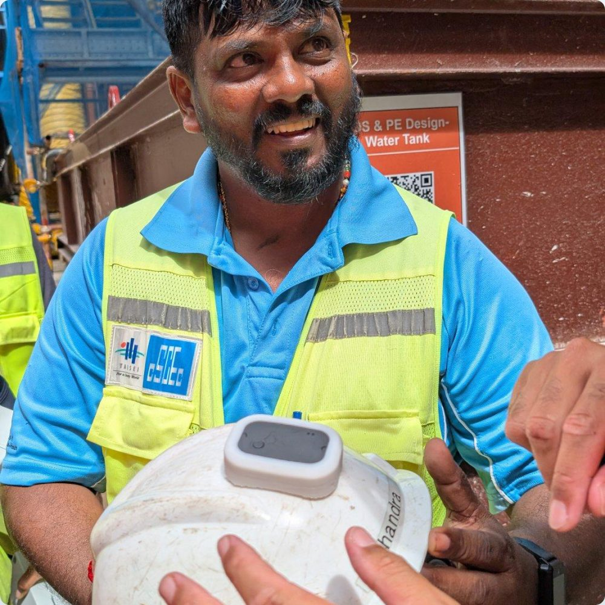
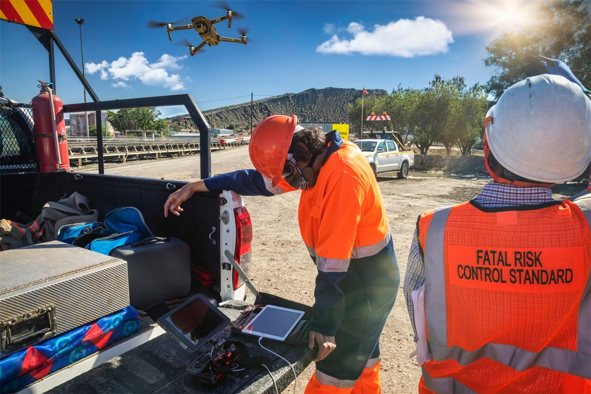
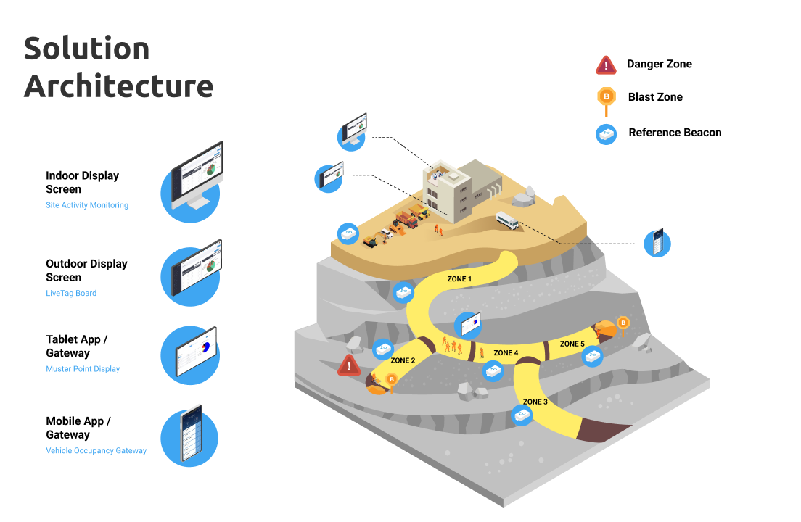
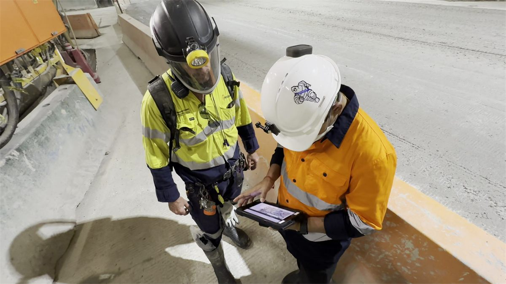
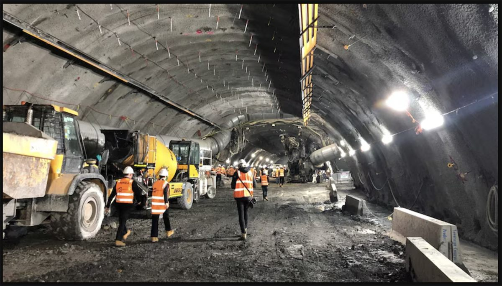
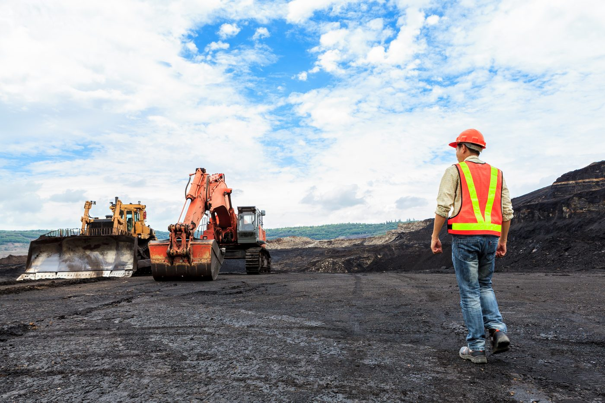

Environmental intelligence
Understanding How Environmental Conditions Influence Operational Performance
Environmental conditions directly influence workforce safety, vehicle operations, production efficiency and regulatory compliance.
The challenge is no longer collecting environmental data.
The challenge is understanding what it means, who is affected, and what action should be taken.
iottag combines environmental monitoring with real-time operational intelligence, creating a live understanding of how changing conditions influence people, equipment and critical work across the entire operation.
Environmental Visibility
Unlike traditional environmental monitoring platforms, iottag doesn't simply display sensor readings.
It understands where environmental conditions occur, who and what is nearby, what work is scheduled, and whether changing conditions are creating operational or safety risk.
Environmental intelligence becomes significantly more valuable when viewed in operational context.
The platform supports monitoring across:
- Air Quality
- Carbon
- Dioxide
- Carbon Monoxide
- Nitrogen Oxides (NOx)
- Hydrogen Sulphide
- Methane
- Diesel Particulate Matter (DPM)
- Dust
- Particulates
- Ventilation Performance
- Temperature
- Humidity
- Weather Stations
- Wind Direction
- Wind Velocity
- Rainfall
- Barometric Pressure
- Noise
- Vibration
Air Quality & Gas Monitoring
Poor environmental conditions can quickly become a safety, compliance and productivity issue.
iottag continuously monitors underground and industrial environments using both fixed infrastructure and integrated third-party monitoring systems. More importantly, it understands the operational impact of changing conditions by combining environmental monitoring with workforce locations, vehicle activity and operational schedules.
Rather than simply raising alarms, the platform identifies who may be affected, predicts potential exposure and helps organisations respond before conditions escalate.

Variable control ventilation
Ventilation is one of the largest operational costs within underground mining. Rather than operating ventilation systems continuously at maximum capacity, iottag connects ventilation controls directly with workforce activity, vehicle movements and production schedules.
The platform automatically understands which work areas are active, how many people are present, where diesel equipment is operating and the environmental conditions required to maintain safe operations.
This enables organisations to optimise airflow, reduce energy consumption and maintain regulatory compliance while ensuring workers remain protected.

Environmental Capacity Planning
Understanding environmental capacity is essential for maintaining safe and productive operations.
iottag continuously evaluates workforce numbers, equipment deployment, ventilation performance and environmental conditions to understand how much operational capacity remains before regulatory limits are reached.
For environments affected by Diesel Particulate Matter (DPM), this enables operations to maximise the number of vehicles that can safely operate within a work area while remaining compliant with workplace exposure limits.
Rather than relying on conservative assumptions, organisations gain a real-time understanding of operational capacity supported by live environmental intelligence.

Heat Stress Monitoring
Heat stress develops gradually and is influenced by far more than ambient temperature.
The iottag Vector Wearable continuously measures temperature and humidity close to the worker's head, where heat exposure is most accurately represented. This provides a far more meaningful understanding of individual environmental exposure than fixed environmental sensors alone.
Combined with workforce location, work activities, vehicle cabins, operational rules and fatigue models, iottag continuously evaluates heat stress risk in real time, supporting regulatory compliance while helping organisations intervene before performance and safety are affected.
Heat stress intelligence also contributes directly to the broader Fatal Risk Management framework.

Fire Detection &
Connected Emergency Response
Environmental intelligence becomes critical during emergencies.
By integrating with fire detection systems, gas monitoring, ventilation controls, emergency communications, radios, intercoms and call points, iottag immediately understands where an incident has occurred and how it may affect the wider operation.
Safety teams receive instant notifications through SMS, WhatsApp and other communication channels, together with live operational context showing the incident location, nearby personnel, vehicle movements, evacuation routes and environmental conditions.
This enables faster, more coordinated emergency response supported by complete situational awareness.

Environmental Conditions In Operational Context
Environmental data becomes significantly more valuable when connected to the Operational Digital Twin.
Instead of analysing environmental information in isolation, iottag understands how changing conditions influence workforce safety, vehicle operations, production activities, maintenance schedules and critical infrastructure.
By continuously connecting environmental intelligence with operational activity, organisations gain a complete understanding of why risk is developing and where intervention will have the greatest impact.

AI-Powered Environmental Insight
Thousands of environmental readings are generated every minute across a large operation.
iottag analyses these continuously alongside workforce movement, equipment activity, operational schedules and historical trends to identify patterns that would otherwise remain hidden.
Instead of simply reporting environmental changes, the platform identifies emerging operational risk, predicts potential impacts and recommends actions that help teams make faster, better-informed decisions.
Regulatory Compliance Automation
Maintaining environmental compliance across large operations should not rely on manual inspections or periodic reporting.
iottag continuously monitors environmental conditions against configurable workplace exposure limits, ventilation requirements and operational rules.
When conditions begin approaching compliance thresholds, the platform automatically alerts the appropriate personnel, records every event and maintains a complete audit trail to simplify regulatory reporting.

Environmental Incident Investigation
Understanding what happened after an incident is just as important as responding to it.
Using the Operational Digital Twin, organisations can replay historical environmental conditions alongside workforce movements, vehicle activity, production events and emergency responses.
This enables investigators to understand not only what changed, but why it changed, who was affected and how similar events can be prevented in the future.

Environmental Capacity Planning
Historical environmental intelligence provides a powerful planning tool for future operations.
By analysing environmental trends across work areas, production cycles, seasonal changes and equipment utilisation, organisations can predict environmental constraints before work begins.
This helps optimise workforce deployment, production sequencing, ventilation planning and infrastructure investment while reducing operational delays.

Sustainability & Energy Optimisation
Environmental intelligence is also a powerful driver of sustainability.
By understanding exactly when ventilation, cooling, lighting and environmental infrastructure are required, iottag helps organisations minimise unnecessary energy consumption without compromising workforce safety.
The result is lower operating costs, reduced emissions and more sustainable operations supported by real operational demand rather than fixed assumptions.

Connected Environmental Ecosystem
iottag is designed to integrate with existing environmental infrastructure rather than replace it.
The platform connects with gas monitoring systems, environmental sensors, ventilation controls, weather stations, fire detection systems, communication platforms, Operational Technology (OT) systems and industrial control systems to create a single operational view.
This protects existing investments while enabling organisations to build a truly connected Operational Digital Twin.
Download Technical Resources
Learn more about our environmental intelligence capabilities.
Environmental Intelligence
That Understands Your Operation
Transform environmental monitoring into operational intelligence that improves safety, productivity, sustainability and regulatory compliance.